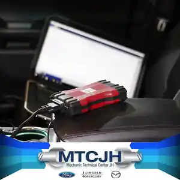
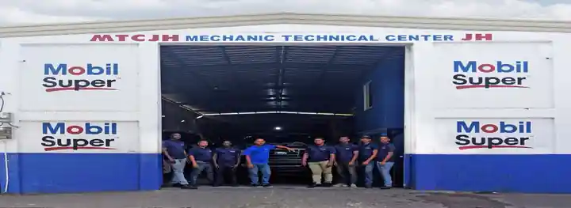
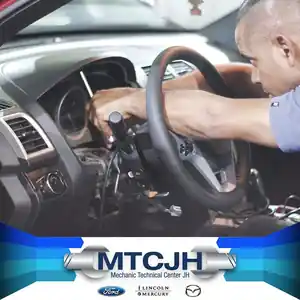
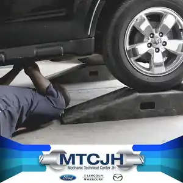
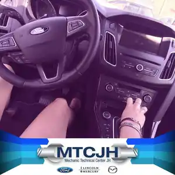
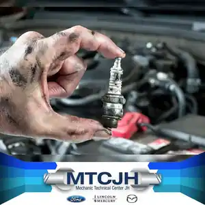

01 / DIAGNÓSTICO
Diagnóstico computarizado
Lectura, análisis y pruebas dirigidas para encontrar la causa del síntoma.
Diagnóstico, mantenimiento y reparación automotriz con un principio claro: identificar la causa antes de cambiar piezas, explicar lo encontrado y reparar solo con tu autorización.
Datos, síntomas y pruebas antes de recomendar una intervención.

ARCHIVO HISTÓRICO MTCJHEsta nueva web parte de la historia real de MTCJH: su equipo, sus servicios y su cultura técnica. No de fotografías genéricas de banco de imágenes.
Selecciona lo que percibes. Un síntoma orienta la prueba; no determina automáticamente qué pieza cambiar.
La pérdida de potencia puede relacionarse con admisión, combustible, encendido, sensores o escape. Diagnosticar reduce la incertidumbre.
Estas fotografías fueron recuperadas de la antigua página de MTCJH.

Lectura, análisis y pruebas dirigidas para encontrar la causa del síntoma.

Evaluación de circuitos, sensores, alimentación y sistemas eléctricos.

Suspensión, dirección, estabilidad y componentes relacionados.

Diagnóstico y servicio para recuperar desempeño y confort.

Componentes seleccionados según la necesidad técnica identificada.
Intervenciones planificadas para conservar rendimiento.
Registramos vehículo, síntomas e información relevante desde el primer contacto.
Iniciar evaluaciónAgenda una evaluación o contáctanos directamente. MTCJH está en Santo Domingo y atiende de lunes a sábado.
Este formulario quedará conectado al API de MTCJH para registrar la solicitud directamente en el sistema.